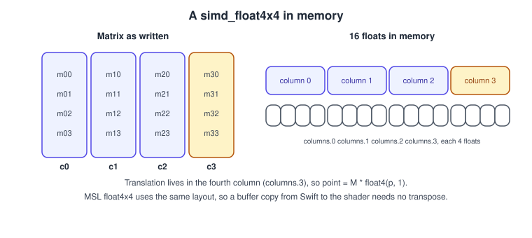
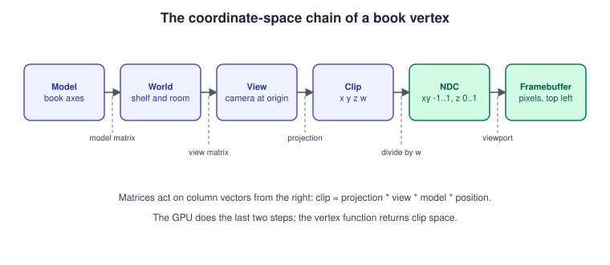
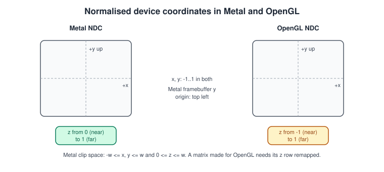

Math for 3D
|
This content was generated with the assistance of AI and should be verified against the official documentation before being relied on in production. |
A vertex on its way to the screen is multiplied by a few matrices, divided by one number and scaled by one rectangle. Everything else in a 3D renderer is built on that chain, and most "my model is invisible, mirrored or inside out" bugs are a convention mismatch inside it: a matrix stored by rows instead of columns, a depth range of -1 to 1 where Metal expects 0 to 1, a vector that is 12 bytes in Swift and 16 in the shader. This page fixes the conventions Metal uses and gives a small math library in Swift that follows them, which the rest of this section reuses.
The facts were checked in November 2026. They apply to Metal 4 on the 26 OSes and MSL 4.1 on the 27 OSes (Xcode 27, Swift 6.4); the math
itself has not changed since the first version of Metal. The types come from the simd framework (Swift) and from the Metal Shading Language
(MSL), so everything runs on macOS, iOS, iPadOS, tvOS and visionOS. The general theory (vectors, matrices, homogeneous coordinates) is in
Vectors, Matrices and Homogeneous Coordinates, the chain in
Coordinate Spaces and Transforms and rotations in
Rotations and Quaternions. Here we look only at what is Metal-specific. In the Metal Bookshelf,
the running example of this section, this is the maths behind the camera that looks at the shelf; the matrices are used from the first rotating book
(Transforms and Camera). The matching OpenGL page, for comparison, is
Coordinate Systems and Transforms.
The simd types
Swift’s simd module and MSL define the same family of types, with different spellings.
| Meaning | Swift (simd) |
MSL | Size and alignment |
|---|---|---|---|
2 floats |
|
|
8 and 8 |
3 floats |
|
|
16 and 16 (the fourth float is padding) |
4 floats |
|
|
16 and 16 |
3 floats, no padding |
(use three |
|
12 and 4 |
3 x 3 matrix |
|
|
48 and 16 (three columns of 16 bytes) |
4 x 4 matrix |
|
|
64 and 16 |
Quaternion |
|
(none; use |
16 and 16 |
Also available: integer vectors (simd_int2, simd_uint3, int2, uint3), half-precision vectors (half4 in MSL, SIMD4<Float16> in Swift where Float16 is available) and double
vectors in Swift (simd_double3; MSL has no double, which Apple GPUs do not support). On the GPU prefer half for colours and anything that does not need more than three digits, since it halves the
bandwidth and the register use.
The one that surprises people is float3: it is stored in 16 bytes. A struct with a float3 member followed by a float is not 16 bytes, and an array of
float3 has a stride of 16. The same is true on the Swift side, so a struct shared through a header (see
Setup: Xcode and the Project) has the same layout in both languages. Layout problems come from packed data:
a vertex buffer that contains three tightly packed floats per position must be described with MTLVertexFormat.float3 in the vertex descriptor and read as
packed_float3 or through a [[stage_in]] struct, never as float3*.
Column-major matrices

Both simd_float4x4 and MSL float4x4 are column-major: a matrix is an array of four column vectors, so memory holds all of column 0, then all of column 1, and so on. In
Swift you build one from columns (simd_float4x4(columns: (c0, c1, c2, c3))) and read it as m.columns.3; in MSL m[3] is the same column and m[3][1] is its
second component, which means column first, row second, the opposite of the usual mathematical notation, which writes the row first.
Translation sits in the fourth column. With column vectors, a point is transformed by multiplying on the left:
\[ \mathbf{p}' = M \mathbf{p} = \begin{pmatrix} r_{00} & r_{01} & r_{02} & t_x \\ r_{10} & r_{11} & r_{12} & t_y \\ r_{20} & r_{21} & r_{22} & t_z \\ 0 & 0 & 0 & 1 \end{pmatrix} \begin{pmatrix} x \\ y \\ z \\ 1 \end{pmatrix} \]
and transforms combine right to left: projection * view * model * position applies the model matrix first. A matrix copied from Swift into a buffer and read in MSL as
float4x4 needs no transpose, because the two have the same layout. This is the opposite of what is needed for some older books and for Direct3D-style row-vector code
(position * matrix); if a model looks sheared or mirrored after pasting a matrix function from elsewhere, check the convention before debugging anything else.
The chain from model space to pixels

-
Model space is the coordinate system of the mesh as the artist made it (the book’s spine along one axis, its origin at a corner or its centre).
-
The model matrix (scale, rotate, translate) places it in world space: the room that holds the shelf, with many books.
-
The view matrix is the inverse of the camera’s placement. It moves the world so the camera is at the origin looking down a fixed axis: view space (also called eye or camera space).
-
The projection matrix maps the view frustum to the clip volume: clip space, with four components
(x, y, z, w). The vertex function returns this value in the[[position]]output. -
The GPU divides by
w(the perspective divide) to get normalised device coordinates (NDC), and clips against the volume first. -
The viewport transform maps NDC to the pixels of the render target: the framebuffer coordinates.
The vertex function does the first four steps (usually with a single combined matrix, mvp = projection * view * model, computed once per draw on the CPU or
per instance on the GPU). The hardware does the last two. The perspective divide is
\[ \mathbf{p}_{ndc} = \frac{1}{w_{clip}} \begin{pmatrix} x_{clip} \\ y_{clip} \\ z_{clip} \end{pmatrix} \]
and the viewport transform, for a viewport of width W and height H starting at the origin, gives
\[ x_{fb} = \frac{x_{ndc} + 1}{2} W, \qquad y_{fb} = \frac{1 - y_{ndc}}{2} H, \qquad z_{fb} = z_{ndc} \cdot (z_{far} - z_{near}) + z_{near} \]
where znear and zfar are the depth range of the viewport (0 and 1 by default). Note the 1 - y: the framebuffer origin is at the top left in Metal.
Metal’s conventions

| Convention | Metal | OpenGL (for comparison) |
|---|---|---|
NDC x and y |
-1 to 1, y up |
-1 to 1, y up |
NDC and clip z |
0 to 1 (near to far); clip volume is |
-1 to 1 |
Framebuffer and viewport origin |
Top left, y down |
Bottom left, y up |
Texture coordinate origin |
Top left (v grows downward) |
Bottom left |
Handedness of NDC |
Left-handed: x right, y up, z into the screen |
Left-handed after the projection (right-handed in view space by convention) |
Default front face |
Clockwise ( |
Counter-clockwise ( |
Default cull mode |
None; set it with |
Disabled until enabled |
The depth range is the one that costs time when porting: an OpenGL projection matrix produces z in -1 to 1, and in Metal everything with negative z is clipped away, so a scene that ported "fine" shows only the far half. Either change the projection (below) or, for code ported mechanically, post-multiply the OpenGL matrix by a remapping matrix that maps z to (z + w) / 2. The porting issues are collected in Migrating from OpenGL and Porting OpenGL to Vulkan, Metal and WebGPU.
Source: setFrontFacing(:); MTLViewport
Metal itself does not force a handedness on view space: the maths above is correct whether you use a left- or right-handed world, as long as the view and projection matrices agree. This section uses the right-handed convention (x right, y up, the camera looks down -z), the same as glTF and USD, so that the Bookshelf model needs no mirroring.
A small math library
The functions below are a complete Math.swift for the Bookshelf: translation, scale, rotation, right-handed look-at, perspective and orthographic matrices with a 0-to-1 depth range, and the normal
matrix. Apple’s simd framework provides the vector and matrix algebra (the * operator, simd_inverse, simd_transpose, simd_cross, simd_normalize) but not the graphics matrices, so they are written here.
import simd
typealias float3 = SIMD3<Float>
typealias float4 = SIMD4<Float>
typealias float4x4 = simd_float4x4
typealias float3x3 = simd_float3x3
func radians(fromDegrees degrees: Float) -> Float { degrees * .pi / 180 }
extension simd_float4x4 {
static func translation(_ t: float3) -> float4x4 {
float4x4(columns: (float4(1, 0, 0, 0), float4(0, 1, 0, 0),
float4(0, 0, 1, 0), float4(t.x, t.y, t.z, 1)))
}
static func scale(_ s: float3) -> float4x4 {
float4x4(columns: (float4(s.x, 0, 0, 0), float4(0, s.y, 0, 0),
float4(0, 0, s.z, 0), float4(0, 0, 0, 1)))
}
/// Rotation by `angle` radians around a unit `axis` (right-handed, counter-clockwise looking down the axis).
static func rotation(angle: Float, axis: float3) -> float4x4 {
float4x4(simd_quatf(angle: angle, axis: simd_normalize(axis)))
}
/// Right-handed view matrix: the camera is at `eye`, looks at `target`, `up` is roughly up.
static func lookAt(eye: float3, target: float3, up: float3) -> float4x4 {
let f = simd_normalize(target - eye) // forward
let s = simd_normalize(simd_cross(f, up)) // right
let u = simd_cross(s, f) // true up
return float4x4(columns: (float4(s.x, u.x, -f.x, 0),
float4(s.y, u.y, -f.y, 0),
float4(s.z, u.z, -f.z, 0),
float4(-simd_dot(s, eye), -simd_dot(u, eye), simd_dot(f, eye), 1)))
}
/// Right-handed perspective projection with clip-space z in 0...1 (Metal).
static func perspective(fovY: Float, aspect: Float, near: Float, far: Float) -> float4x4 {
let f = 1 / tan(fovY / 2)
let a = far / (near - far) // maps view z = -near to 0 and -far to 1
return float4x4(columns: (float4(f / aspect, 0, 0, 0),
float4(0, f, 0, 0),
float4(0, 0, a, -1),
float4(0, 0, a * near, 0)))
}
/// Right-handed orthographic projection with clip-space z in 0...1 (Metal).
static func orthographic(left: Float, right: Float, bottom: Float, top: Float,
near: Float, far: Float) -> float4x4 {
let rl = right - left, tb = top - bottom, fn = far - near
return float4x4(columns: (float4(2 / rl, 0, 0, 0),
float4(0, 2 / tb, 0, 0),
float4(0, 0, -1 / fn, 0),
float4(-(right + left) / rl, -(top + bottom) / tb, -near / fn, 1)))
}
/// Upper-left 3x3 (rotation and scale, no translation).
var upperLeft3x3: float3x3 {
float3x3(columns: (float3(columns.0.x, columns.0.y, columns.0.z),
float3(columns.1.x, columns.1.y, columns.1.z),
float3(columns.2.x, columns.2.y, columns.2.z)))
}
/// Matrix for transforming normals: the inverse transpose of the upper-left 3x3.
var normalMatrix: float3x3 { simd_transpose(simd_inverse(upperLeft3x3)) }
}Source: Accelerate: simd
The perspective matrix follows from two requirements, which is how to derive it for any other convention. The view-space point z = -near must land at NDC z = 0 and z = -far at 1, after the divide by w = -z:
\[ z_{ndc} = \frac{a z + a \cdot n}{-z} \quad\text{with}\quad a = \frac{f}{n - f} \]
which gives 0 at z = -n and 1 at z = -f. The first two diagonal entries scale x and y by the field of view: f / aspect and f, where f = 1 / tan(fovY / 2). The fourth row (0, 0, -1, 0) copies -z
into w, which is what the divide uses. (In the code, the local f in perspective is the focal scale; in lookAt it is the forward vector.)
Checking the conventions
The most reliable way to catch a convention bug is to project the near and far planes on the CPU and look at the numbers.
import simd
let near: Float = 0.1, far: Float = 100
let projection = float4x4.perspective(fovY: radians(fromDegrees: 60), aspect: 16.0 / 9.0, near: near, far: far)
func ndc(_ viewSpace: float3) -> float3 {
let clip = projection * float4(viewSpace.x, viewSpace.y, viewSpace.z, 1)
return float3(clip.x, clip.y, clip.z) / clip.w
}
print("near plane z:", ndc(float3(0, 0, -near)).z) // 0.0
print("far plane z: ", ndc(float3(0, 0, -far)).z) // 1.0 (up to rounding)
print("half-way z: ", ndc(float3(0, 0, -(near + far) / 2)).z) // close to 1: depth is non-linear
print("above axis y:", ndc(float3(0, 1, -5)).y) // positive: +y is up in NDC
let view = float4x4.lookAt(eye: float3(0, 1.2, 3), target: float3(0, 1, 0), up: float3(0, 1, 0))
let model = float4x4.translation(float3(0.4, 0.8, 0)) * float4x4.rotation(angle: radians(fromDegrees: 15), axis: float3(0, 1, 0))
let mvp = projection * view * model
print("book origin in clip space:", mvp * float4(0, 0, 0, 1))Source: Accelerate: simd
The "half-way" line shows a property worth knowing: depth in NDC is a hyperbolic function of distance, so most of the 0-to-1 range is spent close to the camera and a 24-bit or 32-bit depth buffer has little
precision far away. Two fixes are standard: a larger near plane (the single most effective change), and reversed-Z, in which near maps to 1 and far to 0. With a floating-point depth buffer
(.depth32Float) reversed-Z distributes precision much better, because floats have their finest resolution near zero. It needs three changes: swap the roles of near and far in the matrix,
clear the depth buffer to 0 instead of 1, and use depthCompareFunction = .greater. The infinite-far variant sets far to infinity and removes the far plane.
The matrices in MSL
The shader side is short, because the CPU already combined the matrices.
#include <metal_stdlib>
using namespace metal;
struct Uniforms {
float4x4 modelViewProjection;
float4x4 model;
float3x3 normalMatrix;
};
struct VertexIn {
float3 position [[attribute(0)]];
float3 normal [[attribute(1)]];
};
struct VertexOut {
float4 position [[position]]; // clip space
float3 worldNormal;
};
vertex VertexOut book_vertex(VertexIn in [[stage_in]],
constant Uniforms &u [[buffer(1)]]) {
VertexOut out;
out.position = u.modelViewProjection * float4(in.position, 1.0); // column vector on the right
out.worldNormal = normalize(u.normalMatrix * in.normal);
return out;
}
// Building a matrix in MSL: the arguments are the columns.
float4x4 translation(float3 t) {
return float4x4(float4(1, 0, 0, 0), float4(0, 1, 0, 0), float4(0, 0, 1, 0), float4(t, 1));
}When the shader does the multiplication per instance (many books, one draw), passing the matrices in a buffer of float4x4 and indexing it with [[instance_id]] is the usual form, covered in
Buffers and Vertex Descriptors.
Rotations
A matrix built from three Euler angles suffers from gimbal lock and cannot be interpolated smoothly. Store an orientation as a quaternion (simd_quatf), combine rotations with the * operator, interpolate with simd_slerp(q0, q1, t),
and convert to a matrix with simd_float4x4(q) only when building the model matrix. A unit quaternion for an angle and an axis is built by simd_quatf(angle:axis:), and q.act(v) rotates a vector without making a matrix. The theory is in
Rotations and Quaternions. In the Bookshelf the book that spins on the shelf keeps its orientation in a quaternion and updates it with the frame time:
import simd
struct BookTransform {
var position = float3(0, 1, 0)
var scale = float3(1, 1, 1)
var orientation = simd_quatf(angle: 0, axis: float3(0, 1, 0))
mutating func spin(radiansPerSecond: Float, dt: Float) {
let delta = simd_quatf(angle: radiansPerSecond * dt, axis: float3(0, 1, 0))
orientation = simd_normalize(delta * orientation) // renormalise to avoid drift
}
var matrix: float4x4 {
.translation(position) * float4x4(orientation) * .scale(scale) // scale first, then rotate, then translate
}
}Source: Accelerate: simd
The normal matrix
Normals are directions, and they must stay perpendicular to the surface when the model is scaled non-uniformly. Multiplying them by the model matrix does not guarantee that; the correct matrix is the inverse transpose of the
upper-left 3 x 3 (normalMatrix in the code above). For a transform with only rotation and uniform scale it equals the model matrix up to a scale, which is why the mistake goes unnoticed until the first stretched object. Compute it
on the CPU once per object, not per vertex, and renormalise in the shader.
Common mistakes
-
A matrix function from OpenGL code. Producing z in -1 to 1 clips half the scene in Metal. Use the 0-to-1 forms above.
-
Row-vector code.
position * matrixandmatrix * positionare different operations; Metal andsimduse the second form for column-major matrices. -
float3in a packed buffer. The shader reads 16 bytes where the data has 12. Usepacked_float3or a vertex descriptor. -
Culling with the wrong winding. The default front face is clockwise, and a left-handed or y-flipped pipeline may reverse it. If the model disappears when culling is on and appears when it is off, set
setFrontFacing(.counterClockwise)to match your index order. -
Flipped textures. Texture coordinates start at the top left. A texture loaded with the origin at the bottom left (
MTKTextureLoader.Option.origin) appears upside down unless the option agrees with the asset. -
Resizing without updating the aspect ratio. Recompute the projection when the drawable size changes (see MetalKit, MTKView and SwiftUI).
-
Depth precision. A near plane of 0.001 with a far plane of 1000 wastes almost all precision; start near 0.1 and consider reversed-Z.
Performance notes
-
Combine matrices on the CPU: one
projection * view * modelper object per frame costs far less than three multiplications per vertex. -
Use the
halftype for colours and normals in fragment functions on Apple GPUs. -
Do the work that depends only on the camera (view-projection) once per frame, and keep per-object matrices in a buffer addressed by instance.
-
The
simdlibrary compiles to NEON vector instructions on Apple silicon, so the CPU-side maths is fast; avoid converting to arrays ofFloatin hot loops.